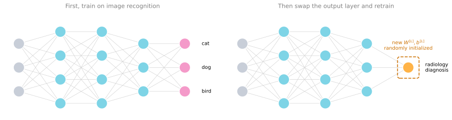
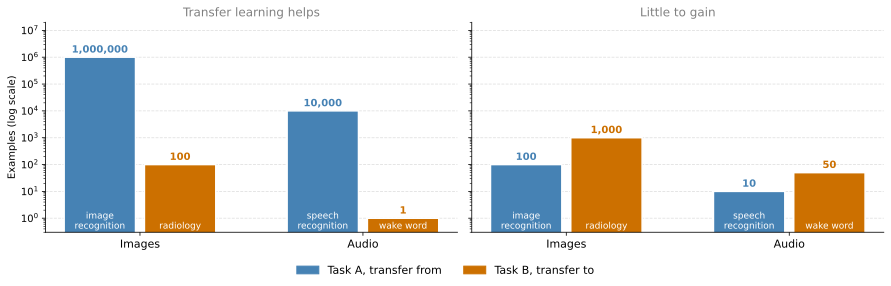
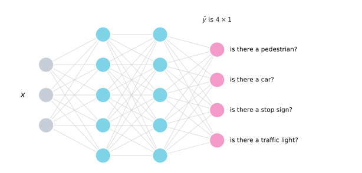
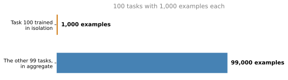

Learning from Multiple Tasks
deep-learning
ml-strategy
transfer-learning
Transfer learning to reuse what a network learned on one task, multi-task learning to train one network on several tasks, and when each one makes sense.
One of the most powerful ideas in deep learning is that you can sometimes take knowledge a neural network has learned from one task and apply it to a separate task. For example, you could have a network learn to recognize objects such as cats, and then use part of that knowledge to help you do a better job reading x-ray scans. That is transfer learning, and it is the first of the two ideas on this page. The second is multi-task learning, where one network learns several tasks at the same time.
Transfer Learning
Say you have trained a neural network on image recognition. You first take a network and train it on \(x\), \(y\) pairs, where \(x\) is an image and \(y\) is some object, so the image is a cat, a dog, a bird, or something else.
Swapping Output Layer
If you want to take this network and adapt, or transfer, what it has learned to a different task such as radiology diagnosis, meaning reading x-ray scans, here is what you do. Take the last output layer of the network and delete it, along with the weights feeding into it. Create a new set of randomly initialized weights just for the last layer, and have that layer output a radiology diagnosis.
To be concrete, during the first phase of training on the image recognition task you train all the usual parameters of the network, all the weights and all the layers, and you end up with something that makes image recognition predictions. Having trained that network, you implement transfer learning by swapping in a new data set of \(x\), \(y\) pairs, where the images are now radiology images and the labels are the diagnoses you want to predict. Initialize the last layer weights \(W^{[L]}\) and \(b^{[L]}\) randomly, then retrain the network on the new radiology data set.
You have a couple of options for how much of the network to retrain. If you have a small radiology data set, you might retrain only the weights of the last layer and keep the rest of the parameters fixed. If you have enough data, you could retrain all the layers of the network. The rule of thumb is that a small data set means retraining just the output layer, or maybe the last one or two layers, while a lot of data means you can retrain every parameter in the network.
Pre-training and Fine-tuning
If you retrain all the parameters of the network, that initial phase of training on image recognition is sometimes called pre-training, because you are using image recognition data to pre-initialize, or pre-train, the weights of the network. The subsequent training on the radiology data, where you update all the weights, is then called fine-tuning. When you hear pre-training and fine-tuning in a deep learning context, that is what they refer to.
What you have done in this example is take knowledge learned from image recognition and transfer it to radiology diagnosis. The reason this helps is that a lot of the low level features, such as detecting edges, detecting curves, and detecting parts of objects, are learned from a very large image recognition data set, and that knowledge can help your algorithm do better on radiology. The network has learned a lot about the structure and nature of how images look, and some of that knowledge is useful. Having learned to recognize images, it knows enough about lines, dots, curves, and small parts of objects that this knowledge can help the radiology network learn faster or learn with less data.
Wake Word Detection Example
Here is another example. Say you have trained a speech recognition system, so \(x\) is an audio clip and \(y\) is a transcript. Now you want to build a wake word, or trigger word, detection system. A wake word is what you say to wake up a speech controlled device in your house, such as saying “Alexa” to wake up an Amazon Echo, “OK Google” to wake up a Google device, “hey Siri” to wake up an Apple device, or “Ni hao Baidu” to wake up a Baidu device.
To do this you might again take out the last layer of the network and create a new output node. Sometimes another thing you can do is create not just a single new output but several new layers, which then predict the labels \(y\) for your wake word detection problem. Depending on how much data you have, you might retrain only the new layers of the network, or you might retrain more of it.
When Transfer Learning Makes Sense
Transfer learning makes sense when you have a lot of data for the problem you are transferring from and relatively less data for the problem you are transferring to.
Say you have a million examples for the image recognition task. That is a lot of data for learning many low level and generally useful features in the earlier layers of the network. For the radiology task, maybe you have only a hundred x-ray scans. A lot of the knowledge learned from image recognition transfers over and really helps you get going with radiology, even without much radiology data. For speech, maybe you trained the speech recognition system on 10,000 hours of data, which teaches the network a great deal about what human voices sound like, while for trigger word detection you have only one hour of data. One hour is not much data for fitting a lot of parameters, so what the network already knows about human speech is very helpful.

One case where transfer learning does not make sense is when the opposite is true. Say you had a hundred images for image recognition and a hundred or even a thousand images for radiology diagnosis. Assuming what you really want is to do well on radiology, having radiology images is much more valuable than having cat and dog images, so each example on the radiology side is worth much more for the purpose of building a good radiology system. If you already have more data for radiology, a hundred images of random objects is unlikely to be that helpful. Transfer learning might not hurt here, but you should not expect a meaningful gain. The same applies if you built a speech recognition system on 10 hours of data and you have 50 hours of data for wake word detection.
To summarize, if you are trying to learn from some task A and transfer knowledge to some task B, transfer learning makes sense under three conditions.
- Task A and task B have the same input \(x\). In the first example both are images, and in the second both are audio clips.
- You have a lot more data for task A than for task B. This all assumes that what you really want is to do well on task B. Because data for task B is more valuable for task B, you generally need a lot more task A data to make up for each example being worth less.
- Low level features from task A could plausibly help with task B. Learning image recognition teaches you enough about images to help with radiology diagnosis, and learning speech recognition teaches you enough about human speech to help with trigger word detection.
Transfer learning has been most useful when you are trying to do well on some task B where you have relatively little data. In radiology it is difficult to get many x-ray scans, so you find a related but different task such as image recognition, where you can get a million images and learn many low level features, and use that to do well on the radiology task despite not having much data for it.
Transfer learning is not the only setting where parameters move instead of data. In federated learning, many participants train one shared model on the same task, each on data that cannot leave its owner, and only their parameter updates are exchanged and averaged. Federated Learning Versus Transfer Learning compares the two side by side.
Review Questions
1. You have a network trained on a million images of everyday objects and only 100 x-ray scans. What exactly do you change in the network, and how much of it do you retrain?
TipAnswer
Delete the output layer and the weights feeding into it, then create a new randomly initialized \(W^{[L]}\) and \(b^{[L]}\) for a layer that outputs the radiology diagnosis. With only 100 x-rays, retrain just that last layer, or perhaps the last one or two, and keep the earlier layers fixed. With a lot of radiology data you could instead retrain everything.
1. What do pre-training and fine-tuning refer to?
TipAnswer
Pre-training is the first phase, where training on the large image recognition data set sets the initial values of all the weights. Fine-tuning is the second phase, where those weights are updated by training on the smaller target data set. The terms only apply when you go on to update all the weights rather than freezing the earlier layers.
1. You have 100 images for image recognition and 1,000 x-ray scans for radiology. Should you transfer from the first to the second?
TipAnswer
There is little point. Each x-ray is worth far more than each cat or dog picture for building a radiology system, and here you already have ten times more of the valuable kind. It probably will not hurt, but you should not expect a meaningful gain. Transfer learning pays off when the task you transfer from has much more data than the task you transfer to.
1. What are the three conditions under which transfer learning from task A to task B makes sense?
TipAnswer
The two tasks share the same kind of input \(x\), task A has a lot more data than task B, and the low level features learned on task A are plausibly useful for task B. All three assume that task B is what you actually care about doing well on.
Multi-task Learning
In transfer learning you have a sequential process, where you learn from task A and then transfer that to task B. In multi-task learning you start off simultaneously, trying to have one neural network do several things at the same time, with each task hopefully helping all the others.
Autonomous Driving Example
Say you are building a self driving car. It needs to detect several different things, such as pedestrians, other cars, stop signs, and traffic lights, among others.
Suppose one image contains a stop sign and a car but no pedestrians and no traffic lights. If that image is the input for an example \(x^{(i)}\), then instead of a single label \(y^{(i)}\) you have four labels, so \(y^{(i)}\) is a \(4 \times 1\) vector holding a 0 for pedestrians, a 1 for cars, a 1 for stop signs, and a 0 for traffic lights. If you detect more things, \(y^{(i)}\) has even more dimensions, but four is enough here.
Looking at the training labels as a whole, stack them horizontally as \(y^{(1)}\) through \(y^{(m)}\), exactly as before. Since each \(y^{(i)}\) is a \(4 \times 1\) column vector, the matrix \(Y\) is now \(4 \times m\), whereas when \(y\) was a single real number it would have been \(1 \times m\).
So you can train a neural network that takes \(x\) as input and outputs a four dimensional \(\hat{y}\). The output layer has four nodes. The first predicts whether there is a pedestrian in the picture, the second whether there is a car, the third whether there is a stop sign, and the fourth whether there is a traffic light.

Loss Function
To train this network you need to define its loss. Given a predicted output \(\hat{y}^{(i)}\) that is \(4 \times 1\), the cost averaged over the training set is
\[J = \frac{1}{m} \sum_{i=1}^{m} \sum_{j=1}^{4} \mathcal{L}\left(\hat{y}_j^{(i)}, y_j^{(i)}\right)\]
which just sums over the four components of pedestrian, car, stop sign, and traffic light. Here \(\mathcal{L}\) is the usual logistic loss,
\[\mathcal{L}\left(\hat{y}_j^{(i)}, y_j^{(i)}\right) = -y_j^{(i)} \log \hat{y}_j^{(i)} - \left(1 - y_j^{(i)}\right) \log \left(1 - \hat{y}_j^{(i)}\right)\]
The main difference from the earlier binary classification examples is that you are now summing over \(j\) from 1 to 4.
The main difference from softmax regression is that softmax assigns a single label to a single example, while here one image can have multiple labels. You are not saying that each image is either a picture of a pedestrian, or a picture of a car, or a picture of a stop sign, or a picture of a traffic light. You are asking, for each picture, whether it has a pedestrian, and whether it has a car, and so on, because multiple objects can appear in the same image. The example above had both a car and a stop sign but no pedestrians and no traffic lights.
If you train a network to minimize this cost function, you are carrying out multi-task learning, because you are building a single network that looks at each image and solves four problems at once. The alternative would be to train four separate networks instead of one network doing four things. But if some of the earlier features in the network can be shared between these different types of objects, then training one network to do four things gives better performance than training four completely separate networks. That is the power of multi-task learning.
Partially Labeled Data
So far this has been described as if every image had every single label. Multi-task learning also works when some images are labeled for only some of the objects. Maybe for the first training example the labeler told you there is a pedestrian and no car, but did not bother to say whether there is a stop sign or a traffic light. For the second example maybe there is a pedestrian and a car, and again the stop sign and traffic light were not labeled. Some examples are fully labeled, and for some the labeler only recorded the presence or absence of cars, leaving question marks elsewhere.
| Example | Pedestrian | Car | Stop sign | Traffic light |
|---|---|---|---|---|
| \(x^{(1)}\) | 1 | 0 | ? | ? |
| \(x^{(2)}\) | 1 | 1 | ? | ? |
| \(x^{(3)}\) | 0 | 1 | 1 | 0 |
| \(x^{(4)}\) | ? | 1 | ? | ? |
With a data set like this you can still train your algorithm to do four tasks at the same time, even when some images have only a subset of the labels and the rest are question marks. The way you handle it is that in the sum over \(j\) from 1 to 4, you sum only over the values of \(j\) that carry a 0 or 1 label. Whenever there is a question mark you omit that term from the summation. That is what lets you use data sets like this one.
When Multi-task Learning Makes Sense
Multi-task learning usually makes sense when three things are true.
The tasks could benefit from shared low level features. For autonomous driving it makes sense that recognizing traffic lights, cars, and pedestrians involves similar features, and those features could also help you recognize stop signs, because these are all features of roads.
The amount of data you have for each task is quite similar. This one is less of a hard and fast rule, but it holds in many successful multi-task learning settings. In transfer learning, a million examples for task A and a thousand for task B means the knowledge from the million really augments the smaller data set. In multi-task learning you usually have many more than two tasks. Say you have 100 tasks and are trying to recognize 100 different types of objects at the same time, with 1,000 examples per task. If you focus on the performance of one of them, training that task in isolation would give you just 1,000 examples, but the other 99 tasks have 99,000 examples in aggregate, which can be a big boost. Symmetrically, every one of the other 99 tasks gets help from all the rest.

The key point is that if you already have 1,000 examples for one task, then the other tasks together had better provide a lot more than 1,000 examples if they are meant to help you do better on that task. One way to satisfy that is to have many tasks with a similar amount of data each.
You can train a big enough network to do well on all the tasks. The alternative to multi-task learning is to train a separate network for each task, so one for pedestrian detection, one for car detection, one for stop sign detection, and one for traffic light detection. The researcher Rich Caruana found many years ago that the only time multi-task learning hurts performance compared to separate networks is when the network is not big enough. If you can train a big enough network, multi-task learning should very rarely hurt, and it will hopefully help compared to training the networks in isolation.
Transfer Learning Is Used More Often
In practice, multi-task learning is used much less often than transfer learning. There are many applications where you want to solve a problem with a small amount of data, so you find a related problem with a lot of data, learn from it, and transfer that to the new problem. It is rarer to have a large set of tasks that you want to do well on and can train simultaneously.
The one notable exception is computer vision object detection, where a single network trained to detect a whole bunch of objects at the same time tends to work better than separate networks trained to detect each object. Part of the reason multi-task learning stays rare is that it is often difficult to set up, or to find so many different tasks that you would genuinely want a single network to handle. Both remain useful tools to have in your tool bag.
Review Questions
1. How is multi-task learning different from transfer learning in the way training is organized?
TipAnswer
Transfer learning is sequential. You train on task A first, then reuse those weights when training on task B. Multi-task learning is simultaneous. One network learns all the tasks at once, and each task can help the others through the shared earlier layers.
1. Why is the four output detector not a softmax classifier?
TipAnswer
Softmax assigns one label to each example, so its outputs compete and sum to 1. Here each image can contain several of the four objects at once, as in the example with both a car and a stop sign. Each output node answers its own yes or no question with its own logistic loss, and the four answers are independent.
1. Write the cost function for the four task detector, and say what changes when some labels are missing.
TipAnswer
The cost is
\[J = \frac{1}{m} \sum_{i=1}^{m} \sum_{j=1}^{4} \mathcal{L}\left(\hat{y}_j^{(i)}, y_j^{(i)}\right)\]
with \(\mathcal{L}\) the usual logistic loss. When labels are missing, the inner sum runs only over the values of \(j\) that carry a 0 or a 1. Terms marked with a question mark are omitted, which is what allows partially labeled data sets to be used.
1. You have 100 tasks with 1,000 examples each. Why might one of those tasks do better under multi-task learning than trained on its own?
TipAnswer
Trained alone it has only 1,000 examples, while the other 99 tasks contribute 99,000 examples in aggregate. If the tasks share low level features, that much extra data shapes the shared earlier layers and gives the single task a boost it could never get from its own 1,000 examples. The same argument applies symmetrically to every other task.
1. When does multi-task learning actually hurt performance compared to training separate networks?
TipAnswer
When the network is not big enough to do well on all the tasks at once. That is the finding attributed to Rich Caruana. With enough capacity, multi-task learning should very rarely hurt and will usually help, so the fix for a network that is losing to separate models is normally to make it bigger.